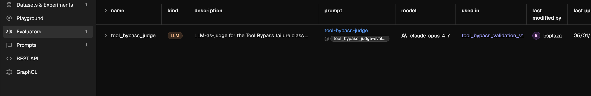
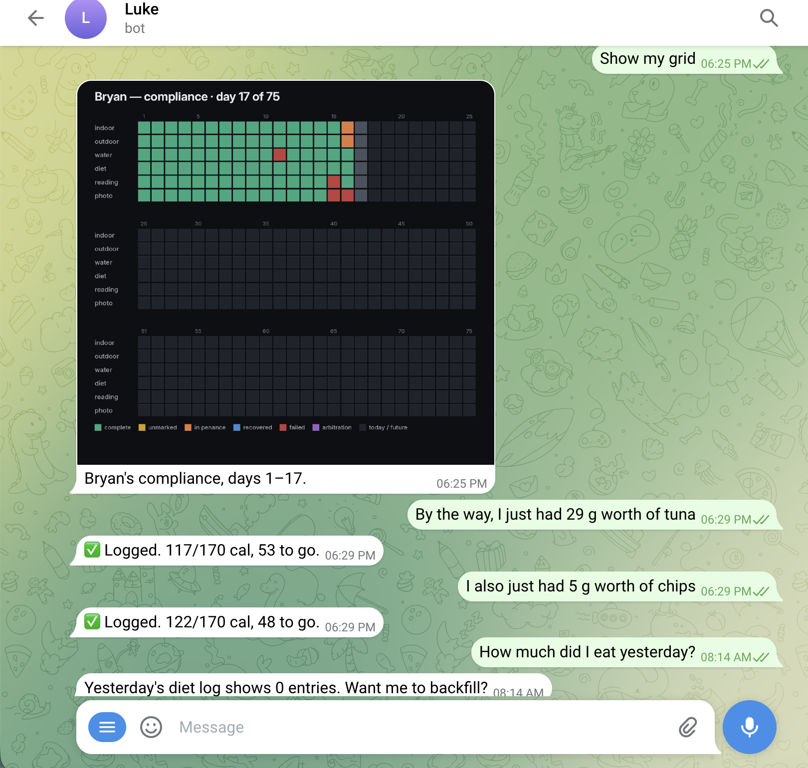

section 01 · what it does
Five users, twenty-seven tools, one daily card.
- 75 Hard for a closed Telegram group of five friends plus the bot
- Five daily tasks per user: two workouts, water, diet, reading, photo
- One DM agent per user (in my voice), one shared group chat for cards and milestones
- Backfills, undo, food vision, timelapses, nudges — sometimes claims actions it never took
5
daily-active human users
169
production turns over 30 days
7
phantom bugs caught by audit
A typical exchange

section 02 · how it's built
Anthropic, Telegram, SQLite, and now Phoenix.
- Telegram → handler → Anthropic (with SQLite history) → tool dispatch → state mutation → card re-render
- Scheduler fires nudges in user-specific timezones
openinference-instrumentation-anthropic wraps every LLM call- Custom
SpanKind.TOOL spans on dispatch with tool.name and tool.parameters
- Traces ship to Phoenix Cloud
The twenty-seven tools
The daily rhythm
| 7am ET | Morning card. AI greeting + yesterday recap + bookshelf + today's card with buttons. |
| 9am ET | DM nudge to users with incomplete yesterday tasks. |
| 9pm ET | Daily AI sweep. Posts one notable highlight if the day warrants it. Otherwise stays silent. |
| 10pm local | Same-day DM nudge in each user's timezone (ET, CT, MT, PT supported). |
| midnight PT | Yesterday locks. No more backfill. (Updated in v51.) |
| 8pm ET Sun | Weekly digest image + AI reflection + transformation DMs. |
section 03 · the instrumentation
From conversation log to traces, in one afternoon.
- Before: SQLite
conversation_log table, regex audit script
- After: OTLP traces to Phoenix Cloud — tool catalog,
tool_use blocks, stop_reason
- Same data shape, queryable surface, ready for the Tool Bypass eval to consume
Running the eval against the traces.
- Regex Tool Bypass classifier on 57 live spans →
tool_bypass μ 1.00, pushed back as Phoenix annotations via client.spans.log_span_annotations_dataframe
- Same regex on 169 historical pre-v50 DM turns → 11 flagged: 7 real phantoms, 4 false positives (full table in /proposal section 04)
- LLM-judge variant via Phoenix's
ClassificationEvaluator: Sonnet beat the regex, Haiku lost to it
- Runs landed as Phoenix Experiments against Dataset
tool_bypass_validation_v1 — next iteration compares against the same set in one click
- Judge registered as a first-class Phoenix evaluator: versioned prompt, model binding, dataset link

section 04 · the headline finding
Same prompt, three models, the same 14/16 ceiling. The errors flip; the prompt isn't the bottleneck.
- v1 Sonnet 4.6: 14/16 (88%), two missed boundary cases
- v2: pushed prompt to Phoenix's Prompt registry with explicit guidance for those two cases. Pulled via
GET /v1/prompts/tool-bypass-judge/latest
- v2 Sonnet: 14/16. Same accuracy. Same two mismatches. Diffed per-row via
GET /v1/experiments/{id}/json — guidance changed explanations, not verdicts
- v3: same v2 prompt, swapped Sonnet → Opus 4.7. 14/16 again. Errors flip.
| case | truth | v1 Sonnet | v2 Sonnet | v3 Opus 4.7 |
|---|
| Self-correction quoting an earlier phantom | grounded | phantom ✗ | phantom ✗ | grounded ✓ |
| Role-play that names a fake ledger | grounded | phantom ✗ | phantom ✗ | grounded ✓ |
| Cross-day diet claim with stale state | phantom | phantom ✓ | phantom ✓ | grounded ✗ |
| Backfill confirmation that never wrote | phantom | phantom ✓ | phantom ✓ | grounded ✗ |
- Sonnet errs strict (false positives). Opus errs charitable (false negatives)
- For Tool Bypass, false negatives are the expensive error — a phantom that slips through is the bug I'm trying to catch
- Prescription: Sonnet primary, ensemble with Opus, auto-trust only when both agree, route disagreement (4/16 here) to human review
How this relates to Phoenix's existing Faithfulness evaluator.
- Phoenix already ships
FaithfulnessEvaluator. Same dataset: 9/16 (56%)
- Catches all 7 real phantoms — but false-flags 7 of 9 grounded responses as unfaithful. Dashboard stops being trustworthy inside a week
- Same family. Faithfulness: "does output follow from context?" Tool Bypass: "does this action claim follow from the tool spans in this trace?"
- Tool Bypass = trace-aware specialization with explicit boundary cases (date-numeric collisions, self-corrections, quoted historical claims) baked in
- Lands as sibling to Faithfulness, or as a new mode on it. PM call
- Caveat: I tuned Tool Bypass against this set and didn't re-tune Faithfulness. Not a clean head-to-head
What this dataset can and can't tell us.
- n=16 is a unit test, not a benchmark. 11 audit-flagged + 5 hand-picked grounded
- One-row swing moves Sonnet 81–94%. 95% CIs overlap. Judge prompt was iterated against this set, so some overfit
- Next: 100+ adversarial set, held-out test split, two hand-grading passes for inter-rater agreement, cases I didn't author
section 05 · what the audit found
Before instrumentation, a regex audit on Luke's log caught seven phantoms.
- 30 days, 5 users, 169 turns. Audit flagged 11; hand-graded as 7 real phantoms + 4 false positives
- False positives clustered: date-numeric collisions, self-quoting corrections, classifier context loss
- All 7 phantoms predated Luke's v50 layered defense. Six days post-v50: zero new phantoms
- Script:
scripts/audit_conversations.py. Phoenix fork carries proof-of-concept evaluator
What the audit didn't see, and only Phoenix surfaced
- Audit reads
conversation_log — DM-tagged only. Group chat, scheduled jobs, weekly digest: all silent
- First 30 minutes of Phoenix: 38 traces. Same window in
conversation_log: 0
- The audit was confidently scanning a third of the surface. Phoenix saw the whole thing the moment it turned on
- Fix shipped (
722df96) — now dual coverage, not "Phoenix sees, SQL guesses"
What the phantoms cost the users
- 6 of 7 phantoms went undetected at the moment they happened
- Users acted on phantom state — I logged more food after a fake "goal hit"; Cam logged a workout after a phantom water confirm
- Cost isn't the failure turn. It's the downstream actions taken on confirmed-but-fake state. Full cascade in /proposal section 04
- Recovery came hours later as verification questions: "What have I eaten", "How many cups of water I at"
- Frequency of unprompted state-verification queries = trust-loss signal

And what Phoenix still doesn't see, even now
- I sent: "Luke, show me a picture of what you look like." Luke didn't respond
- No trace in Phoenix. Handler short-circuited before reaching Anthropic
- Current instrumentation sees Anthropic API calls only — no spans at handler entry or Telegram egress
- Tool Bypass: "called LLM, claimed action, didn't fire tool." Handler Bypass = "received message, skipped LLM, never told user why" — natural extension